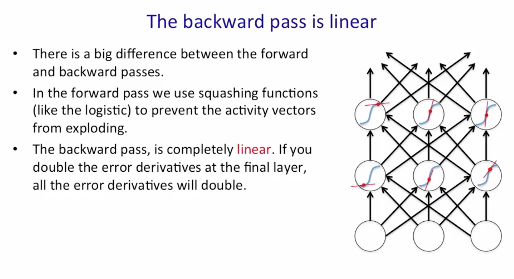

Modeling Sequences
- Overview
- Challenges of Training Deep Networks
- Recurrent Neural Networks
- ⇒ Overview
- Challenges of Training Deep Networks
- Recurrent Neural Networks
Tasks when modeling Sequences
- Input Sequence to Output Sequence
- French to Spanish
- Speech Recognition
- Sound Pressures to word identities
- Training Sequence try to predict the value for current step + 1
Sequence thinking outside the box
- Sequence of words make sense conceptually
- Sequence of network requests fit pattern as well
- Sequence of Pixels in image??
Supervised vs unsupervised
- Training to predict Next term in Sequence blurs that line between supervised and unsupervised
- Overview
- ⇒ Challenges of Training Deep Networks
- Recurrent Neural Networks
Vanishing Gradient
- Stolen from Hinton, breakdown and adapt

Vanishing Gradient
- Backpropagation through many layers increases likelihood of vanishing or exploding gradients
- Challenge to get training signal to early layers
- Linear process
- If weights are small gradient shrinks
- If weights are large the gradient explodes
- Solution is LSTM to preserve time based info isolated from backprop
- Overview
- Challenges of Training Deep Networks
- ⇒ Recurrent Neural Networks
RNN's power
- Distributed Hidden State
- Multiple hidden units can be active at once
- Can "remember" several different things
- Nonlinear
- Allows updates to hidden state in complicated ways
- With enough neurons and enough time theycan compute anything that can be computed on your computer (Hinton Coursera course)
What can an RNN model
- Oscillation
- motor control, walking robots
Back Propagation through time
- Advanced topic
- The recurrent net is conceptually a layered net that re-uses the same weights
- Layered feed forward network with weights constrained at each layer to be the same
Back Propagation through time
- Compute the gradients as usual
- Modify to meet the constraint (time constraint previous slide)
- Represent RNN as feed forward net with shared weights
- Forward pass builds stack of activities at each time slice
- Backward pass peels activities off that stack and computes error derivatives
- That is why called BackProp through time.
- After back prop for each time step constrain weights to match